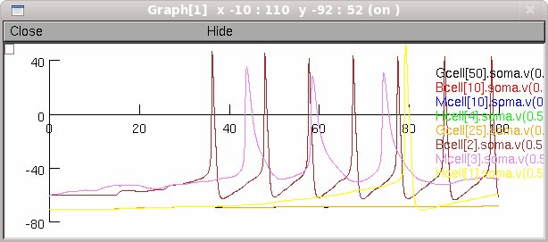

This is the corrected version. CaBK.mod and na.mod have been modified as per the description in forum (see link below). Both the original and the corrected versions are available here in ModelDB. Note that the cell models in the corrected version have not yet been tuned to take into account the behavior of the corrected ion channel. Note: please see the following NEURON forum post describing how bugs found in a few of the ion channel models were fixed: https://www.neuron.yale.edu/phpBB/viewtopic.php?f=18&t=2956 This model was implemented by Rob Morgan in the Soltesz lab at UC Irvine. It is a scaleable dentate gyrus model including four cell types. This model runs in serial (on a single processor) and has been published at the size of 50,000 granule cells (with proportional numbers of the other cells). ******************** The relevant publications are: Morgan, R.J. and I. Soltesz, Nonrandom connectivity of the epileptic dentate gyrus predicts a major role for neuronal hubs in seizures. Proc Natl Acad Sci U S A, 2008. 105(16): p. 6179-84. Dyhrfjeld-Johnsen, J., et al., Topological determinants of epileptogenesis in large-scale structural and functional models of the dentate gyrus derived from experimental data. J Neurophysiol, 2007. 97(2): p. 1566-87. Morgan, R.J., V. Santhakumar, and I. Soltesz, Modeling the dentate gyrus. Prog Brain Res, 2007. 163: p. 639-58. Santhakumar, V., I. Aradi, and I. Soltesz, Role of mossy fiber sprouting and mossy cell loss in hyperexcitability: a network model of the dentate gyrus incorporating cell types and axonal topography. J Neurophysiol, 2005. 93(1): p. 437-53. ******************** Directory contents: *.mod: Mechanism files for ionic conductances *cell.*cell: Synaptic parameters for connections between precell.postcell p*c.hoc: Connection probabilities for each cell type to the other cell types in the network. Precell type is given by the middle letter in the filename. *cdist.hoc: Axonal arbor distributions used in determining connection probabilities 50knet.hoc: Main neuron code for the network run50knet.bash: Bash script for running the network (unix/linux). This script needs to be modified to contain the actual paths for where you placed the files. ******************** Running the Network 1) The mod files must first be compiled into the directory from which you will run the network. ex: nrnivmodl ccanl nca tca LcaMig CaBK gskch hyperde3 bgka ichan2 Gfluct2 2) Run the file run50knet.bash. This file does several things: a) Creates a directory according to the number of granule cells in the network b) Creates a parameters.dat file in the working directory which contains such things as the number of cells for each cell type and the percent of network sclerosis (the network is scalable to some degree but if you alter the number of cells, you may also have to change the connection probabilities and synaptic weights to ensure a well-connected network with reasonable synaptic connectivities). c) Runs the hoc code d) Moves the two output files, numCons.dat and spikerast.dat to the directory that was created in (a) ** While the hoc code for running the network includes usage of the gui, it's highly recommended to run the program in the background with no graphical display for large networks. When run in its default mode (auto-launched from ModelDB for example) the simulation will produce (about 2 minutes after the start button is pressed) a figure like:  --- 20140311 Marianne Bezaire: added frecord_init() on line 1554 of 50knet.hoc so that vector recordings from cells will work properly in case anyone wants to do that.